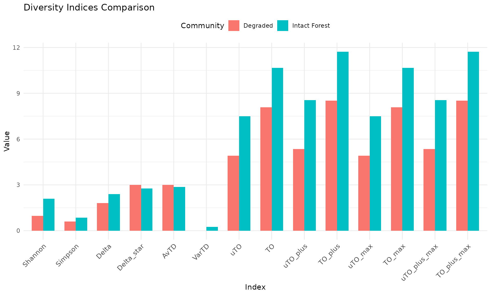
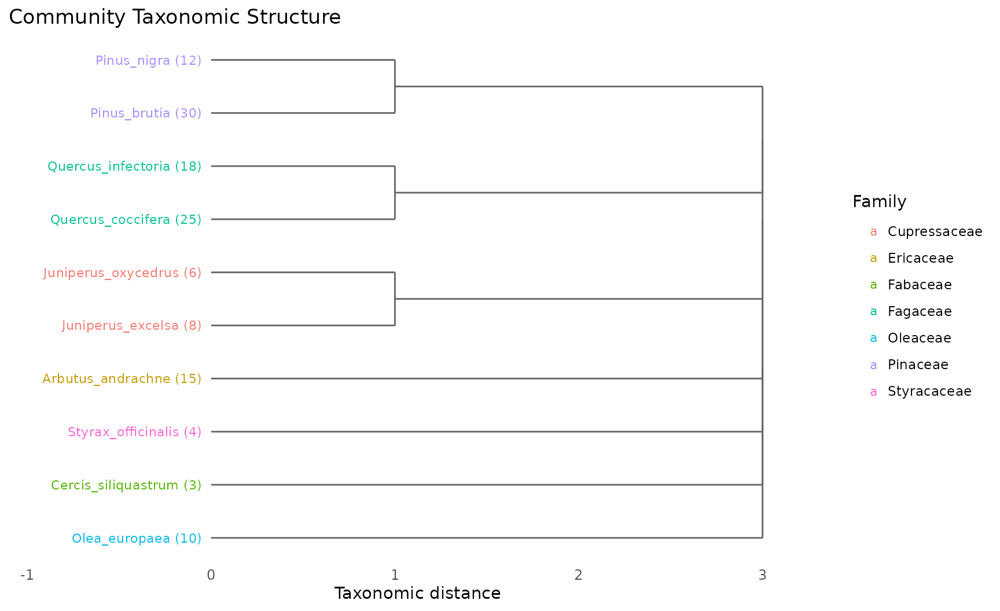
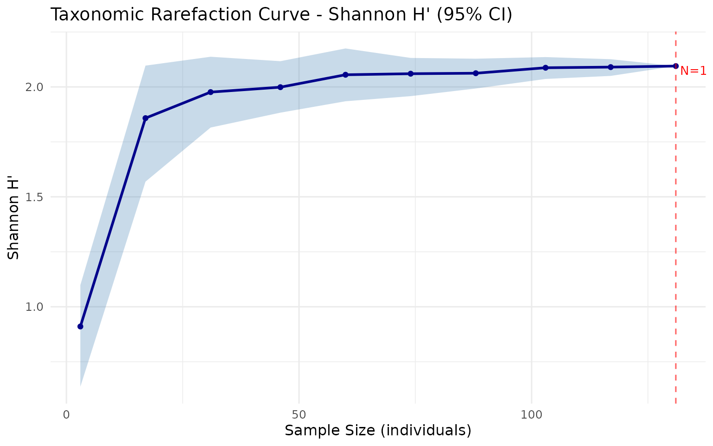

From Raw Data to Publication-Ready Results
This guide walks through a complete analysis workflow using taxdiv — from preparing your data to interpreting and exporting results. By the end, you will have computed all 14 diversity indices, generated diagnostic plots, and saved results to a file.
Step 1: Prepare Your Data
taxdiv needs two inputs:
-
Community data — a named numeric vector (single
site) or a data frame with a
Sitecolumn (multiple sites) -
Taxonomic tree — a data frame with
Speciesand at least one higher-level column (Genus, Family, Order, etc.)
Single community (named vector)
community <- c(
Quercus_coccifera = 25,
Quercus_infectoria = 18,
Pinus_brutia = 30,
Pinus_nigra = 12,
Juniperus_excelsa = 8,
Juniperus_oxycedrus = 6,
Arbutus_andrachne = 15,
Styrax_officinalis = 4,
Cercis_siliquastrum = 3,
Olea_europaea = 10
)Taxonomic tree
Use build_tax_tree() to create a properly structured
tree. Column order defines the hierarchy — species-level first, then
progressively higher ranks:
tax_tree <- build_tax_tree(
species = names(community),
Genus = c("Quercus", "Quercus", "Pinus", "Pinus",
"Juniperus", "Juniperus", "Arbutus", "Styrax",
"Cercis", "Olea"),
Family = c("Fagaceae", "Fagaceae", "Pinaceae", "Pinaceae",
"Cupressaceae", "Cupressaceae", "Ericaceae", "Styracaceae",
"Fabaceae", "Oleaceae"),
Order = c("Fagales", "Fagales", "Pinales", "Pinales",
"Pinales", "Pinales", "Ericales", "Ericales",
"Fabales", "Lamiales")
)
tax_tree
#> Species Genus Family Order
#> 1 Quercus_coccifera Quercus Fagaceae Fagales
#> 2 Quercus_infectoria Quercus Fagaceae Fagales
#> 3 Pinus_brutia Pinus Pinaceae Pinales
#> 4 Pinus_nigra Pinus Pinaceae Pinales
#> 5 Juniperus_excelsa Juniperus Cupressaceae Pinales
#> 6 Juniperus_oxycedrus Juniperus Cupressaceae Pinales
#> 7 Arbutus_andrachne Arbutus Ericaceae Ericales
#> 8 Styrax_officinalis Styrax Styracaceae Ericales
#> 9 Cercis_siliquastrum Cercis Fabaceae Fabales
#> 10 Olea_europaea Olea Oleaceae LamialesMultiple sites (data frame)
For multi-site analysis, your data should look like this:
multi_data <- data.frame(
Site = rep(c("Forest_A", "Forest_B"), each = 5),
Species = c("Quercus_coccifera", "Pinus_brutia", "Juniperus_excelsa",
"Arbutus_andrachne", "Olea_europaea",
"Quercus_coccifera", "Quercus_infectoria", "Pinus_brutia",
"Pinus_nigra", "Cercis_siliquastrum"),
Abundance = c(25, 30, 8, 15, 10,
40, 20, 15, 10, 5),
Genus = c("Quercus", "Pinus", "Juniperus", "Arbutus", "Olea",
"Quercus", "Quercus", "Pinus", "Pinus", "Cercis"),
Family = c("Fagaceae", "Pinaceae", "Cupressaceae", "Ericaceae", "Oleaceae",
"Fagaceae", "Fagaceae", "Pinaceae", "Pinaceae", "Fabaceae"),
Order = c("Fagales", "Pinales", "Pinales", "Ericales", "Lamiales",
"Fagales", "Fagales", "Pinales", "Pinales", "Fabales")
)
head(multi_data)
#> Site Species Abundance Genus Family Order
#> 1 Forest_A Quercus_coccifera 25 Quercus Fagaceae Fagales
#> 2 Forest_A Pinus_brutia 30 Pinus Pinaceae Pinales
#> 3 Forest_A Juniperus_excelsa 8 Juniperus Cupressaceae Pinales
#> 4 Forest_A Arbutus_andrachne 15 Arbutus Ericaceae Ericales
#> 5 Forest_A Olea_europaea 10 Olea Oleaceae Lamiales
#> 6 Forest_B Quercus_coccifera 40 Quercus Fagaceae FagalesStep 2: Compute All Indices at Once
Single community — compare_indices()
results <- compare_indices(community, tax_tree)
results
#> taxdiv -- Index Comparison
#> Communities: 1
#> Indices: Shannon, Simpson, Delta, Delta_star, AvTD, VarTD, uTO, TO, uTO_plus, TO_plus, uTO_max, TO_max, uTO_plus_max, TO_plus_max
#>
#> Community N_Species Shannon Simpson Delta Delta_star AvTD VarTD
#> Community 10 2.094838 0.857642 2.391192 2.766816 2.866667 0.248889
#> uTO TO uTO_plus TO_plus uTO_max TO_max uTO_plus_max TO_plus_max
#> 7.489477 10.66751 8.55023 11.72828 7.489477 10.66751 8.55023 11.72828This returns all 14 indices: Shannon, Simpson, Delta, Delta*, AvTD, VarTD, and the 8 Ozkan pTO indices (uTO, TO, uTO+, TO+, and their max variants).
Multiple sites — batch_analysis()
batch_results <- batch_analysis(multi_data)
batch_results
#> taxdiv -- Batch Analysis
#> Sites: 2
#> Indices: 14
#>
#> Site N_Species Shannon Simpson Delta Delta_star AvTD VarTD uTO
#> Forest_A 5 1.491087 0.752841 2.284483 3.00000 3.0 0.00 6.465853
#> Forest_B 5 1.397992 0.709877 1.679151 2.33913 2.6 0.64 5.352907
#> TO uTO_plus TO_plus uTO_max TO_max uTO_plus_max TO_plus_max
#> 9.643859 7.033776 10.211830 6.465853 9.643859 7.033776 10.211830
#> 8.527886 6.379634 9.557688 5.352907 8.527886 6.379634 9.557688batch_analysis() automatically detects the
Site, Species, and Abundance
columns and computes all indices for each site. You can also use
summary() to see statistics across sites:
summary(batch_results)
#> taxdiv -- Batch Analysis Summary
#> Sites: 2
#>
#> Index Min Mean Max SD
#> Shannon 1.397992 1.444539 1.491087 0.065828
#> Simpson 0.709877 0.731359 0.752841 0.030380
#> Delta 1.679151 1.981817 2.284483 0.428034
#> Delta_star 2.339130 2.669565 3.000000 0.467306
#> AvTD 2.600000 2.800000 3.000000 0.282843
#> VarTD 0.000000 0.320000 0.640000 0.452548
#> uTO 5.352907 5.909380 6.465853 0.786972
#> TO 8.527886 9.085873 9.643859 0.789112
#> uTO_plus 6.379634 6.706705 7.033776 0.462548
#> TO_plus 9.557688 9.884759 10.211830 0.462548
#> uTO_max 5.352907 5.909380 6.465853 0.786972
#> TO_max 8.527886 9.085873 9.643859 0.789112
#> uTO_plus_max 6.379634 6.706705 7.033776 0.462548
#> TO_plus_max 9.557688 9.884759 10.211830 0.462548Step 3: Run the Full Ozkan Pipeline
For deeper analysis, the full three-run pipeline reveals species-level contributions to diversity:
full <- ozkan_pto_full(community, tax_tree, n_iter = 101, seed = 42)
cat("Run 1 (deterministic):\n")
#> Run 1 (deterministic):
cat(" uTO+ =", round(full$run1$uTO_plus, 4), "\n")
#> uTO+ = 8.5502
cat(" TO+ =", round(full$run1$TO_plus, 4), "\n\n")
#> TO+ = 11.7283
cat("Run 2 (stochastic maximum):\n")
#> Run 2 (stochastic maximum):
cat(" uTO+ =", round(full$run2$uTO_plus_max, 4), "\n")
#> uTO+ = 8.5502
cat(" TO+ =", round(full$run2$TO_plus_max, 4), "\n\n")
#> TO+ = 11.7283
cat("Run 3 (sensitivity maximum):\n")
#> Run 3 (sensitivity maximum):
cat(" uTO+ =", round(full$run3$uTO_plus_max, 4), "\n")
#> uTO+ = 8.5502
cat(" TO+ =", round(full$run3$TO_plus_max, 4), "\n")
#> TO+ = 11.7283Step 4: Visualize Results
Compare communities side by side
degraded <- c(
Quercus_coccifera = 40,
Pinus_brutia = 35,
Juniperus_oxycedrus = 10
)
tax_degraded <- tax_tree[tax_tree$Species %in% names(degraded), ]
communities <- list(
"Intact Forest" = community,
"Degraded" = degraded
)
comp <- compare_indices(communities, tax_tree, plot = TRUE)
comp$plot
Inspect the taxonomic tree
plot_taxonomic_tree(tax_tree, community = community,
color_by = "Family",
title = "Community Taxonomic Structure")
Rarefaction curve
rare <- rarefaction_taxonomic(community, tax_tree,
index = "shannon",
steps = 10, n_boot = 50, seed = 42)
plot_rarefaction(rare)
Step 5: Export Results
Save to CSV
# Single community
df <- as.data.frame(t(compare_indices(community, tax_tree)$table))
write.csv(df, "results.csv", row.names = FALSE)
# Multi-site batch
write.csv(as.data.frame(batch_results$results),
"batch_results.csv", row.names = FALSE)Save to Excel
# Requires writexl package
# install.packages("writexl")
writexl::write_xlsx(as.data.frame(batch_results$results),
"batch_results.xlsx")Quick Reference: Which Function to Use?
| I want to… | Function |
|---|---|
| Compute Shannon/Simpson |
shannon(), simpson()
|
| Compute all 14 indices for one community | compare_indices() |
| Compute all indices for many sites | batch_analysis() |
| Run the full Ozkan pipeline (Run 1+2+3) | ozkan_pto_full() |
| Test if AvTD/VarTD is significant |
simulate_td() + plot_funnel()
|
| Check if sampling effort is sufficient |
rarefaction_taxonomic() +
plot_rarefaction()
|
| Compare two or more communities visually |
compare_indices(plot=TRUE) or
plot_radar()
|
| See species contributions | plot_bubble() |
| View the taxonomic hierarchy | plot_taxonomic_tree() |
| Create a taxonomic tree from species data | build_tax_tree() |